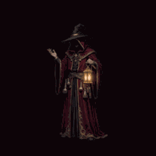
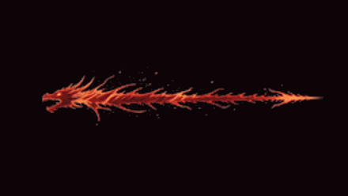
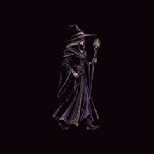
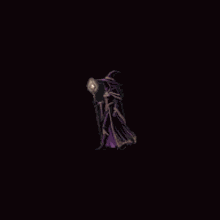

待機動畫
可以用
夜巫、神秘商人、魔王衝鋒預告都做出來了，全部還在暫存路徑、沒有進遊戲，等你點頭才套用。下面的圖是會動的，直接看。


這支是「龍族／火焰」的調性。剩下四隻要各自有辨識度的話，我建議照牠們的屬性分開做：碎骨暴龍走骨白＋碎裂衝擊波、冰霜魔龍走冰藍＋碎冰、混沌龍王走紫黑＋虛空裂縫、滅世之神走金白＋神聖灼燒。四支約 $1.28。
或者只做這一支、五隻共用，那就 $0，但五隻魔王的衝鋒看起來會一模一樣。


| 項目 | 參數 | 估算 |
|---|---|---|
| 夜巫走路 v1 | 6 秒 720p | $0.48 |
| 夜巫走路 v2（重生成） | 6 秒 720p | $0.48 |
| 神秘商人待機 | 4 秒 720p | $0.32 |
| 衝鋒預告試樣 | 4 秒 720p | $0.32 |
| 合計 | ~$1.60 |
沒有遇到額度不足。去背走的是本地工具（ffmpeg + 邊界連通），這幾支沒有花到 OpenAI 的錢。